Флоу с тупиками
Новый пользователь регистрировался и оставался без следующего шага, а часть сценариев не была описана. Это снижало конверсию.
- ✕Нет входа через Google
- ✕Нет перехода в обязательный онбординг
- ✕Ошибки и восстановление пароля не описаны
Без тупиков для каждого статуса аккаунта

О проекте
Fintiba — финансовая платформа для переезда в Германию: блокированный счёт, страховка, а в дальнейшем и открытие банковского счёта. Я спроектировала новый флоу входа и регистрации для веба и мобильного приложения.
Команда
Вела дизайн всего флоу, включая ошибки и восстановление пароля. Сеньор-дизайнер и продакт-оунер ревьюили решения. Проект сделан до появления дизайн-системы, поэтому экраны в прежнем визуальном стиле продукта.
Ключевые изменения
Главное — новый пользователь больше не застревает после регистрации: флоу сам ведёт его в обязательный онбординг. Вход через Google и понятные ошибки убирают тупики на остальных шагах.
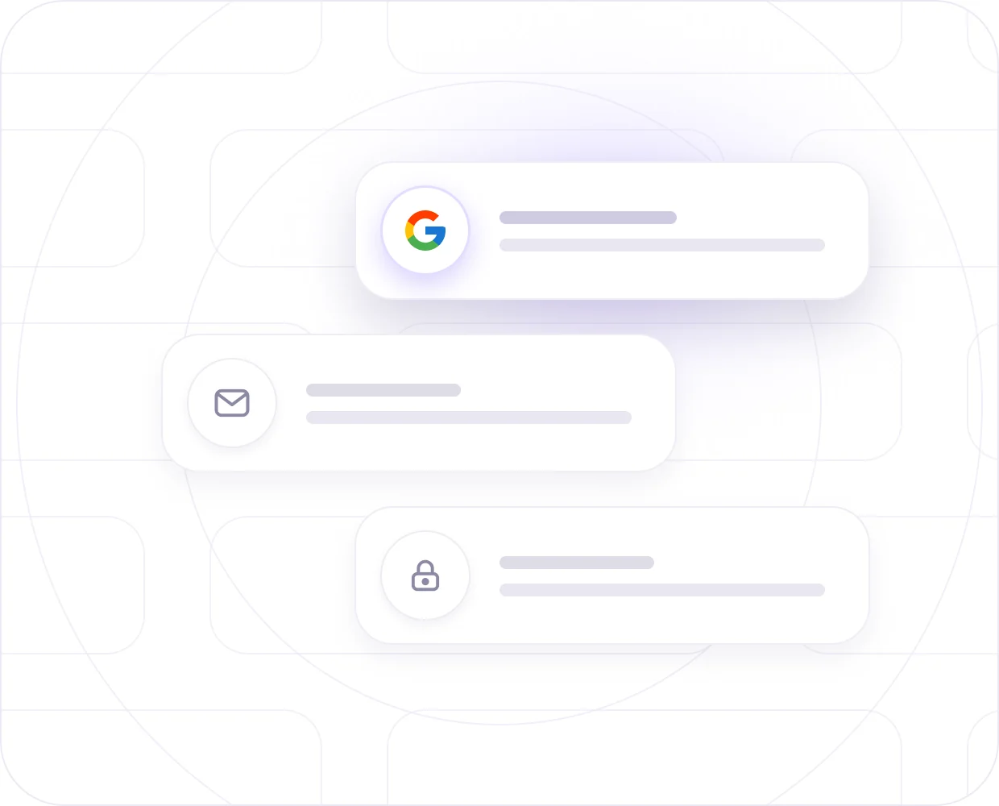
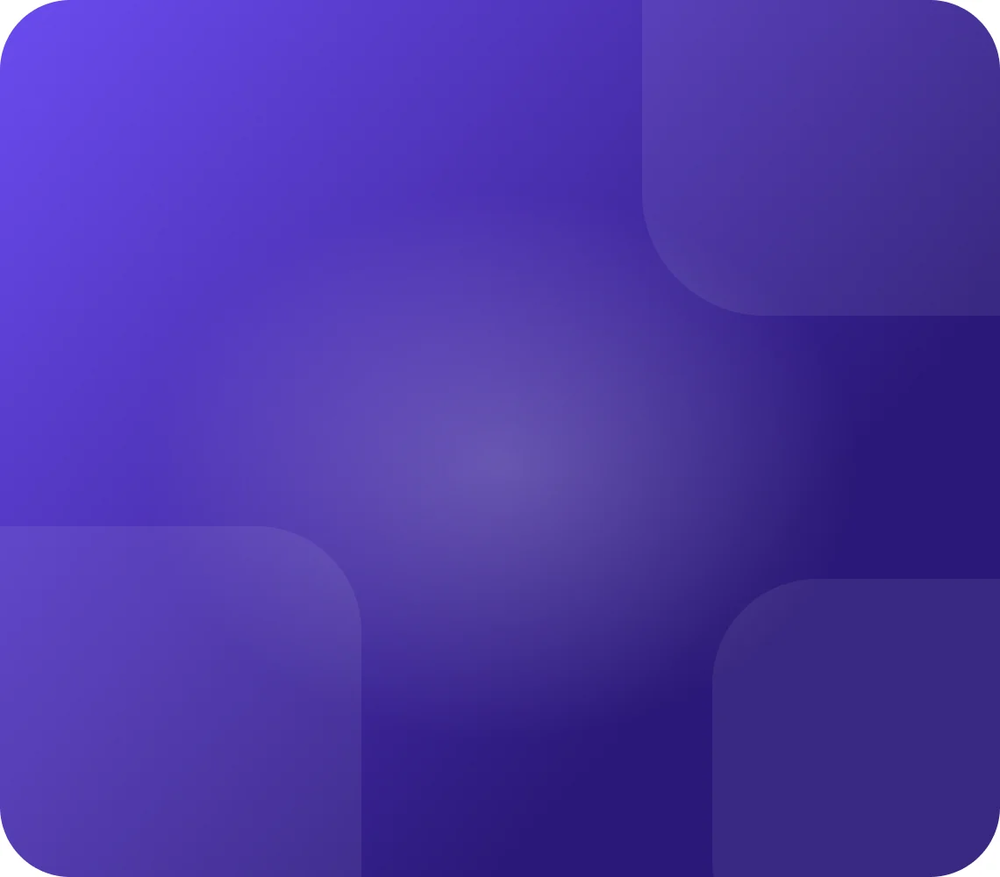

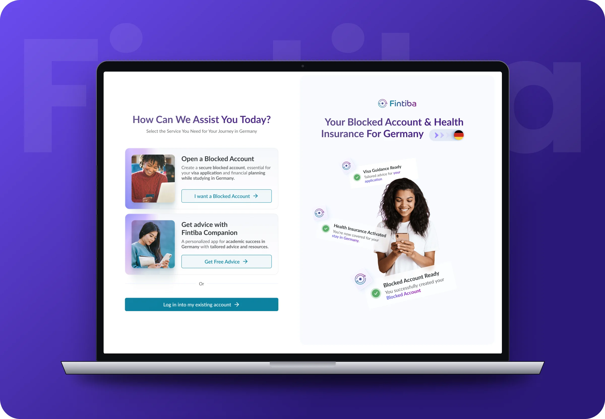
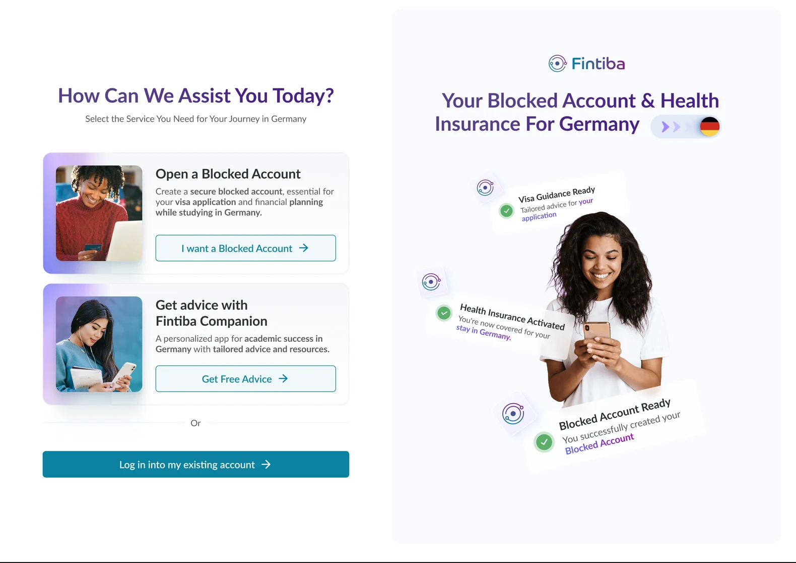
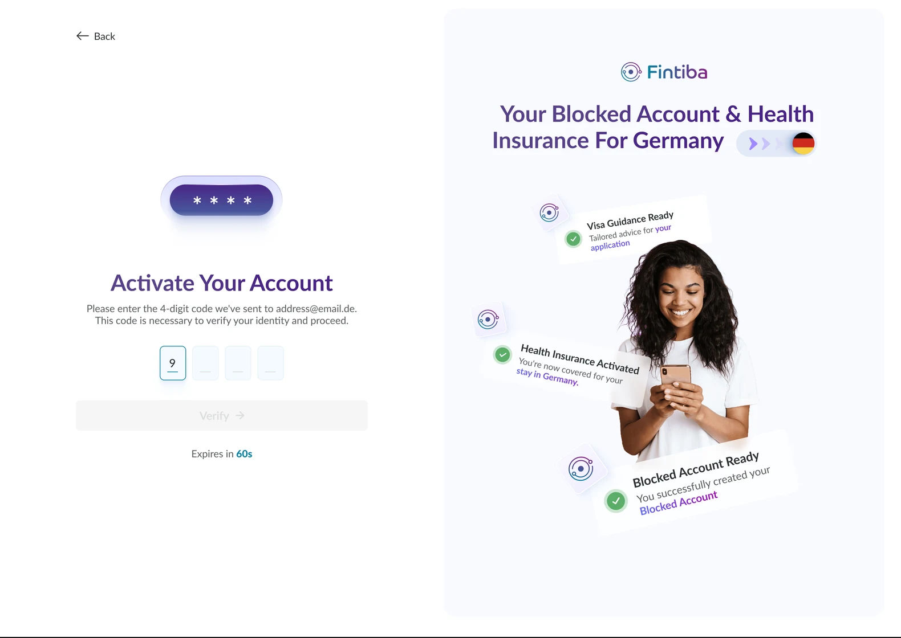

Нет аккаунта: окно «Email не найден» → Blocked Account и онбординг Смотреть на схеме ↓
Новый пользователь регистрировался и оставался без следующего шага, а часть сценариев не была описана. Это снижало конверсию.
Флоу ведёт по одному из трёх путей в зависимости от статуса аккаунта.
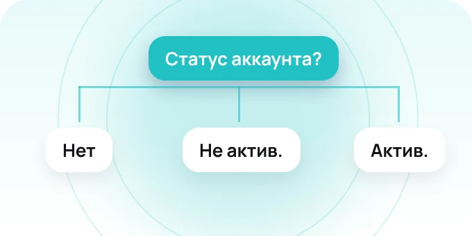
1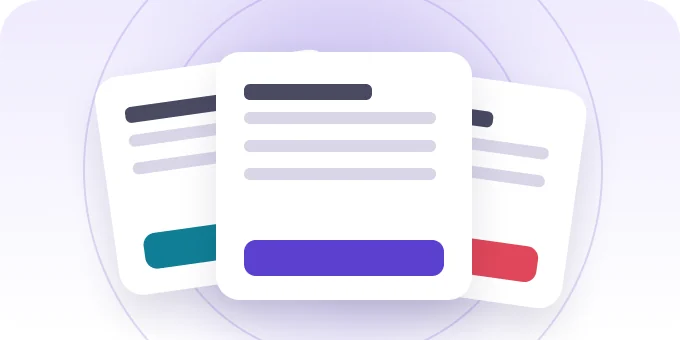
2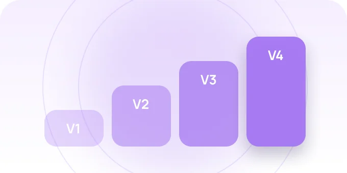
3Листайте карточки вбок →
Первый экран — выбор услуги: Blocked Account, Companion или вход в аккаунт. После ввода email или входа через Google система проверяет аккаунт и ведёт пользователя по одному из трёх путей. Модальное окно «Email не найден» — ключевая развилка: из него новый пользователь сразу попадает в обязательный онбординг.
Ключевые решения
Новый пользователь сразу попадает в обязательный флоу открытия счёта — раньше это был тупик
Убрали барьер регистрации: один клик вместо заполнения формы
Ошибки, восстановление пароля, email не найден — все состояния прописаны и задокументированы для разработки
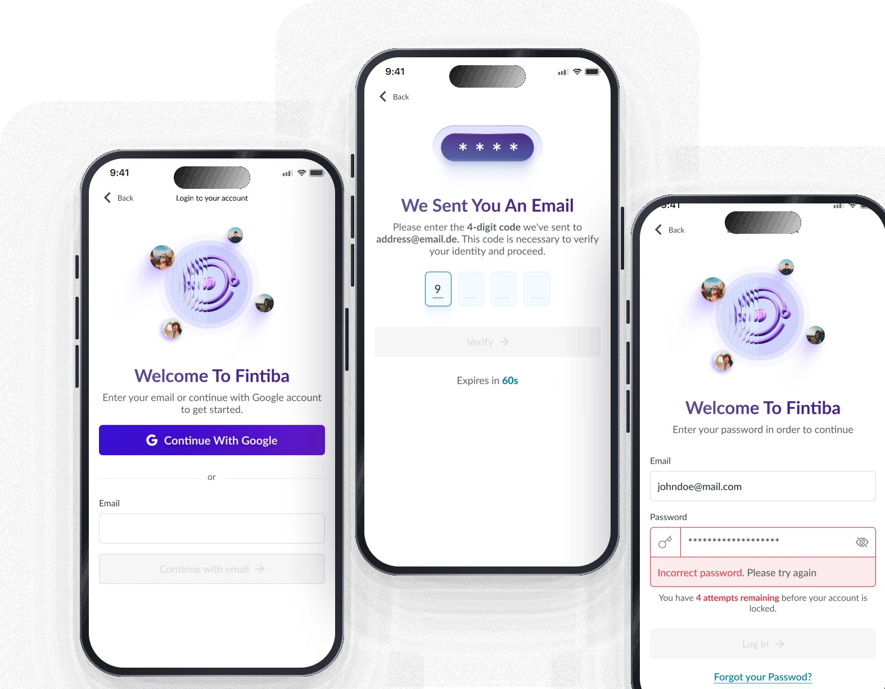
Каждое состояние флоу продумано: выбор услуги, основной путь, подтверждение кодом, ошибки, восстановление пароля и модальное окно «Email не найден», которое ведёт в онбординг. Продукт англоязычный, поэтому экраны на английском.

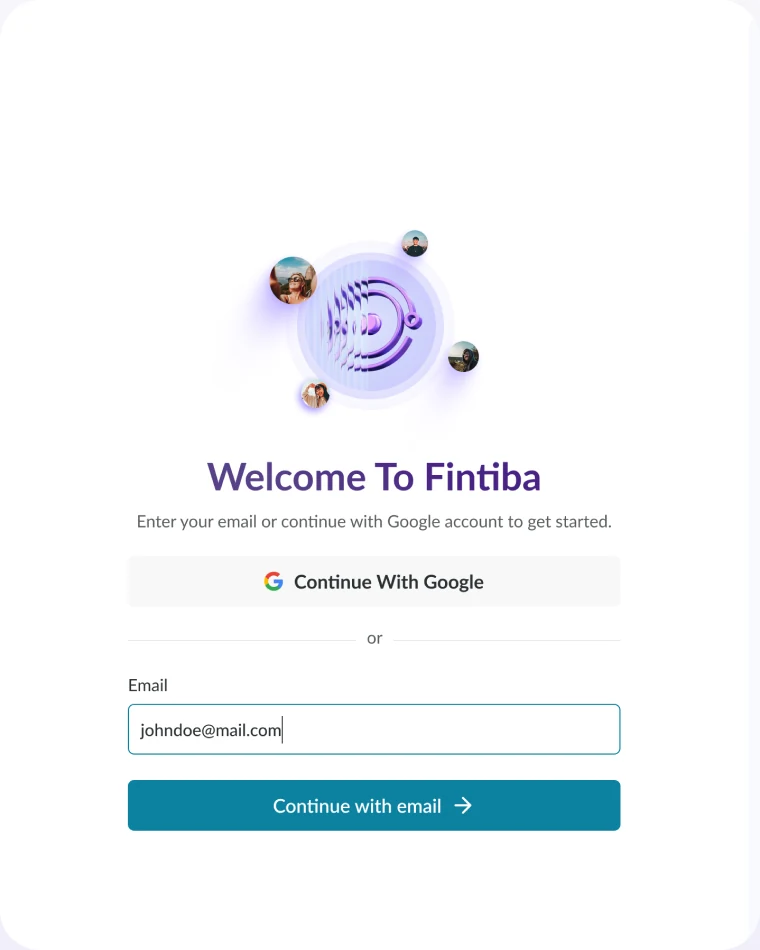

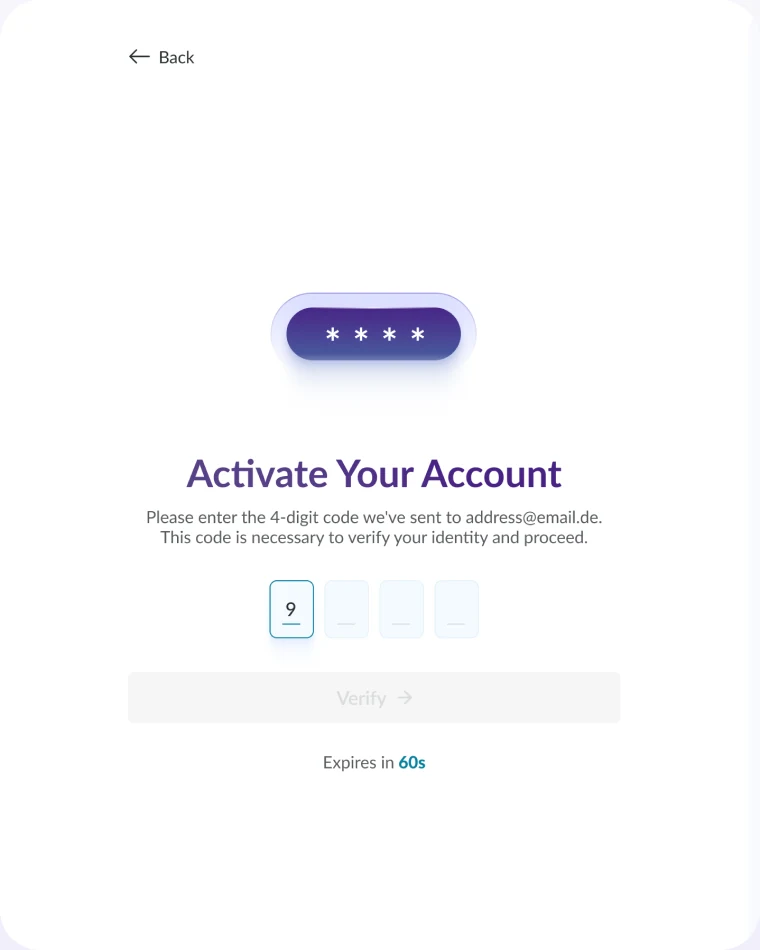
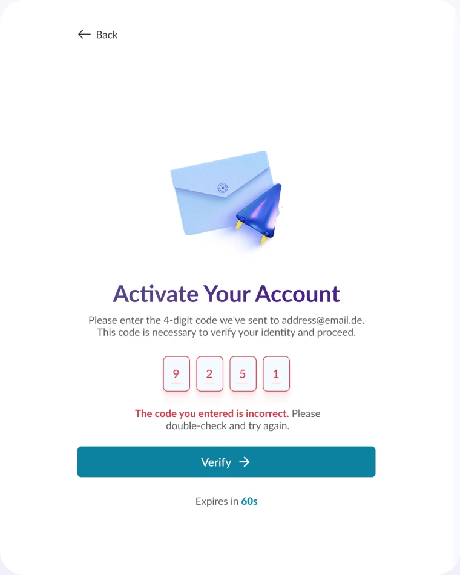

Вход, который ведёт дальше,
а не обрывается на ошибке.
Те же сценарии в нативном приложении: выбор услуги на первом экране и подтверждение аккаунта кодом из письма с повторной отправкой.
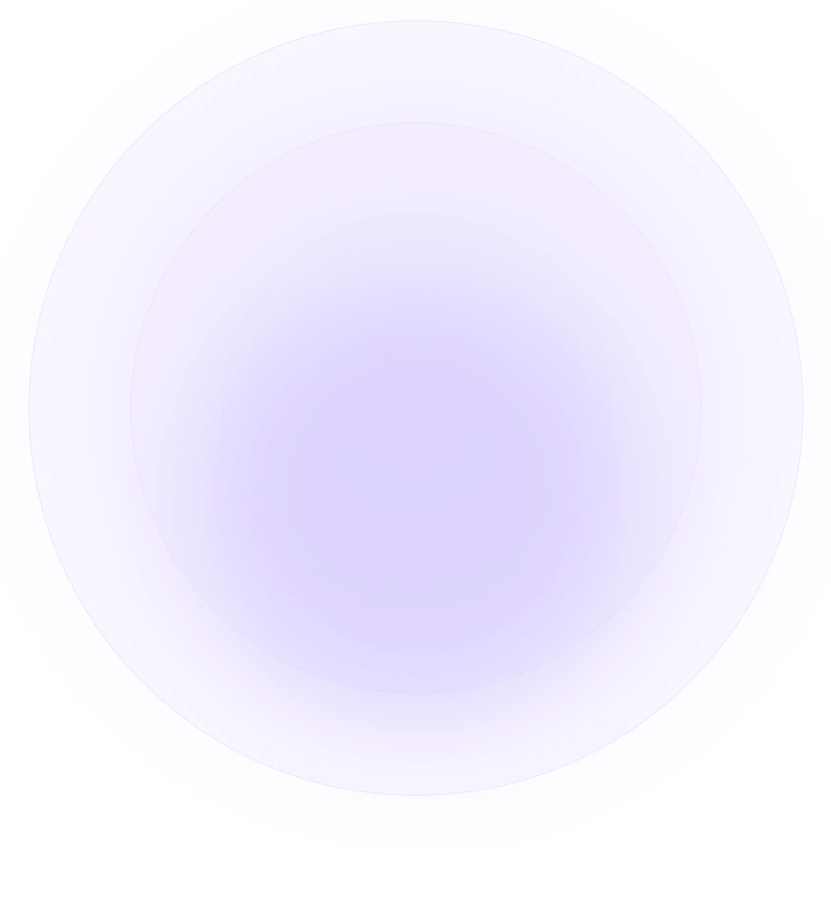
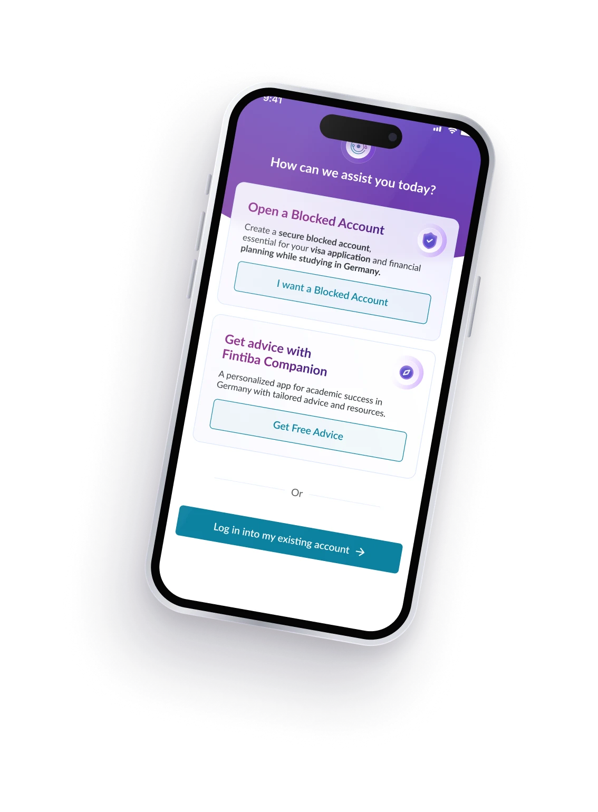
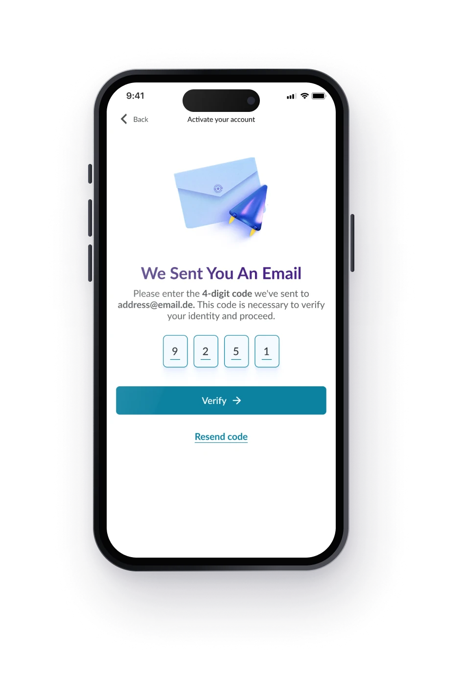
Код из 4 цифр Повторная отправка кода Выбор услуги Вход в существующий аккаунтПо одному пути на каждый статус аккаунта.
Одинаковые для веба и приложения, включая восстановление пароля. В вебе плюс hover-состояния.
Один флоу для веба и нативного приложения.
V1–V3 поэтапно, V4 — полная версия.
Главный вывод
Новый пользователь больше не теряется после регистрации: у любого статуса аккаунта есть следующий шаг, а каждое состояние — от ошибки кода до восстановления пароля — описано для разработки.